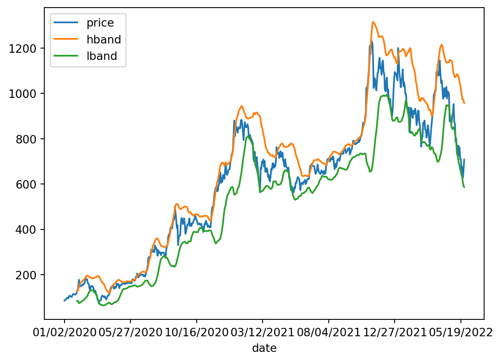
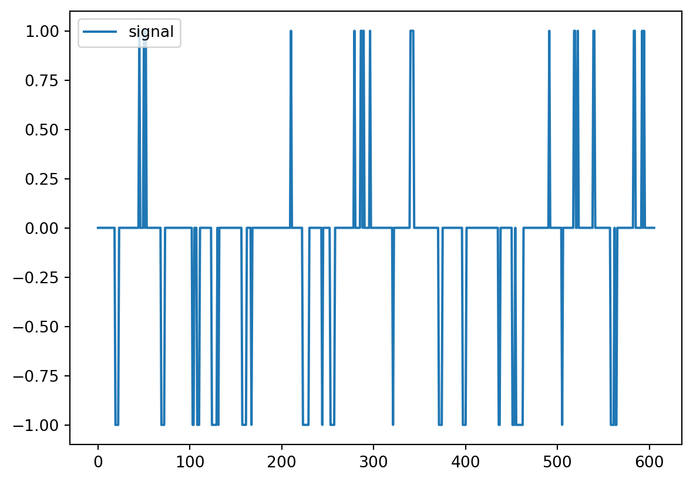

import pandas as pd
import ta4 Market behaviour and applied market anomalies
In the previous chapter, we started with 100 stocks and applied the EMH filter test to the variance to get only those stocks for which the EMH fails (markets are inefficient). We ended with 56 stocks. Then, we can make a prediction based on past information.
data=pd.read_csv("https://raw.githubusercontent.com/abernal30/AFP_py/refs/heads/main/data/anomalies.csv",index_col=0)
data.head()| TSLA.Close | TSM.Close | JNJ.Close | UNH.Close | JPM.Close | TCEHY.Close | TCTZF.Close | XOM.Close | BAC.Close | PG.Close | ... | ACN.Close | CSCO.Close | LRLCF.Close | CICHF.Close | MCD.Close | NKE.Close | INTC.Close | C.PJ.Close | TMUS.Close | TXN.Close | |
|---|---|---|---|---|---|---|---|---|---|---|---|---|---|---|---|---|---|---|---|---|---|
| date | |||||||||||||||||||||
| 01/02/2020 | 86.052002 | 60.040001 | 145.970001 | 292.500000 | 141.089996 | 49.880001 | 49.880001 | 70.900002 | 35.639999 | 123.410004 | ... | 210.149994 | 48.419998 | 293.450012 | 0.87 | 200.789993 | 102.199997 | 60.840000 | 28.570000 | 78.589996 | 129.570007 |
| 01/03/2020 | 88.601997 | 58.060001 | 144.279999 | 289.540009 | 138.339996 | 49.029999 | 48.930000 | 70.330002 | 34.900002 | 122.580002 | ... | 209.800003 | 47.630001 | 297.130005 | 0.84 | 200.080002 | 101.919998 | 60.099998 | 28.719999 | 78.169998 | 127.849998 |
| 01/06/2020 | 90.307999 | 57.389999 | 144.100006 | 291.549988 | 138.229996 | 48.770000 | 48.700001 | 70.870003 | 34.849998 | 122.750000 | ... | 208.429993 | 47.799999 | 293.000000 | 0.84 | 202.330002 | 101.830002 | 59.930000 | 28.719999 | 78.620003 | 126.959999 |
| 01/07/2020 | 93.811996 | 58.320000 | 144.979996 | 289.790009 | 135.880005 | 49.779999 | 49.770000 | 70.290001 | 34.619999 | 121.989998 | ... | 203.929993 | 47.490002 | 288.549988 | 0.88 | 202.630005 | 101.779999 | 58.930000 | 28.629999 | 78.919998 | 129.410004 |
| 01/08/2020 | 98.428001 | 58.750000 | 144.960007 | 295.899994 | 136.940002 | 49.650002 | 49.650002 | 69.230003 | 34.970001 | 122.510002 | ... | 204.330002 | 47.520000 | 287.500000 | 0.88 | 205.910004 | 101.550003 | 58.970001 | 28.709999 | 79.419998 | 129.759995 |
5 rows × 56 columns
Remember that the final goal is to create a portfolio of filtered stocks. For this section, we make another filter applying two market anomalies. The first uses technical analysis trading strategies. And the second by using the momentum effect.
The first market anomaly is technical analysis for trading strategies. For this chapter, we will use that technique to apply algorithm trading. In this case, we will create a signal to buy(long position ) or sell (long position) based on variables created from past information. Then, we will estimate the returns on that strategy.
The second market anomaly is the momentum strategy. There are two kinds of momentum strategies. The short-run momentum anomaly (3 to 12 months). The strategy consists of buying assets when their prices are trending up and selling them when they are down. The idea is that the asset prices with previous higher returns (winners), in the short run, will continue to have high returns, and the asset prices with previous lower returns (losses) will continue to have lower returns. The strategy applied to the portfolio consists of taking long positions in previous higher returns (winners) and short positions in previous lower returns (losses).
And the long-run momentum or reversal effect (2 to 5 years). We expect the opposite effect in the long run. The reversal effect occurs when the asset prices with previous higher returns (winners) reverse and show lower returns. The asset prices with previous lower returns (losses) will have higher returns.
In this chapter, we filter for returns higher than a threshold.
4.1 Technical analysis as market anomaly
For the exposition, we start by applying the strategy to the first stock of our data set. In a subsequent section, we apply a code to make the procedure for all the stocks in the data set.
To create the signal, we follow the book (Jeet and Vats 2017). The idea is to use two technical analysis indicators: the Bollinger Bands (BB) and the Moving Average Converge Diverge (MACD) (see the Appendix for descriptions of these indicators).
As an example, we first create the Bollinger Bands (BB) for one stock and plot a few observations.
We will use the Python module ta.
ticker="TSLA.Close"
bb=ta.volatility.BollingerBands(data[ticker], window=20, window_dev=2)
bb<ta.volatility.BollingerBands at 0x1821bd17440>The argument Window is the time to estimate the standard deviation, and window_dev is the number of standard deviations of the bands. Inside the object “bb” is information, such as the upper or higher band.
hb=bb.bollinger_hband()
hb.head()date
01/02/2020 NaN
01/03/2020 NaN
01/06/2020 NaN
01/07/2020 NaN
01/08/2020 NaN
Name: hband, dtype: float64Or the lower band.
lb=bb.bollinger_lband() To store the two bands in a data frame, together with the price:
band_df=data[ticker]
band_df=pd.concat([band_df,hb,lb],axis=1)
band_df.columns=["price","hband","lband"]
band_df.head()| price | hband | lband | |
|---|---|---|---|
| date | |||
| 01/02/2020 | 86.052002 | NaN | NaN |
| 01/03/2020 | 88.601997 | NaN | NaN |
| 01/06/2020 | 90.307999 | NaN | NaN |
| 01/07/2020 | 93.811996 | NaN | NaN |
| 01/08/2020 | 98.428001 | NaN | NaN |
We plot the result.
band_df.plot();
The following code is to create the following signal:
When the price is higher or equal to the “high (h)” band, it is a sell or short sell signal (-1). When the price is lower than the “low (l)” band, it’s a buy signal (1). Otherwise, it’s a neutral signal or doing nothing (0).
This is the “Loop For” for performing the procedure (getting the signals) for all the observations in the stock.
signal=[]
for j in range(0,band_df.shape[0]):
# ----------this is rhe conditional for each observacion--------------
if band_df["price"].iloc[j,] >= band_df["hband"].iloc[j,]:
signal.append(-1)
elif band_df["price"].iloc[j,] <= band_df["lband"].iloc[j,]:
signal.append(1)
else:
signal.append(0)
# ------------------------------------
signal[:5] [0, 0, 0, 0, 0]Here we print the result:
signal_df=pd.DataFrame(signal,columns=["signal"])
signal_df.plot()
To estimate the strategy’s return, we will multiply the signal by the return for that day. We use the price of the signal day and the price one day after. Assuming it is a buying signal, we buy today and sell it tomorrow, making a one-day profit.
Then, the price of the signal day for observation 19 is:
j=19
band_df["price"].iloc[j,] 128.162003The price of the day after is:
band_df["price"].iloc[j+1,] 130.113998The associated signal for that observation:
signal_df["signal"].iloc[j,] -1The intuition for doing that is: If the signal is one(minus one), it means that the strategy was to buy (sell or short sale) the stock that day and sell (buy) it the next day. If the return is positive (negative), then it implies that the stock price increased (decreased), and by multiplying the return with the signal, we validate that the return of our strategy is positive.
On the contrary, if the signal is one (minus one) and the return negative (positive), it would imply that the price decreased (increased), and by buying (selling or short selling) the stock, we would have a loss, which is represented by the negative return.
Finally, if the signal is zero and the return is positive (negative), the result will be zero, implying that we did not buy (sell) the stock and didn’t have a return for that.
((band_df["price"].iloc[j+1,]/band_df["price"].iloc[j,])-1)*signal_df["signal"].iloc[j,] # el rendimiento aritmético-0.015230684245782333The previous is a daily return. Also, that procedure is for one signal, but we are looking for the return of all signals.
The next code is to get the location of all signals inside signal_df
sig_ret=[]
for i in range(signal_df.shape[0]):
if signal_df["signal"].iloc[i,] != 0: # for signals different than 1 or -1
sig_ret.append(i)
sig_ret[:5] [19, 20, 21, 22, 45]The following code estimates the daily return strategy for each signal multiplied by the signal.
ret_i=[]
for j in sig_ret:
ret_i.append(((band_df["price"].iloc[j+1,]/band_df["price"].iloc[j,])-1)*signal_df["signal"].iloc[j,])
ret_i[:5] [-0.015230684245782333,
-0.19894863272128482,
-0.13725642948717942,
0.1717583956255767,
0.061397994430888]The previous are daily returns. Here, we estimate the strategy annualized return for this stock as the average return.
ret=pd.DataFrame(ret_i,columns=["ret"])
pow((1+ret.mean().loc["ret",]),252)-1 -0.9083067491493413The next step is to create a “Loop For” to perform the same procedure we did for Tesla for all stock inside data and store the results in a data frame.
ret_all=[]
for ticker in data.columns:
bb=ta.volatility.BollingerBands(data[ticker], window=20, window_dev=2)
hb=bb.bollinger_hband()
lb=bb.bollinger_lband()
band_df=data[ticker]
band_df=pd.concat([band_df,hb,lb],axis=1)
band_df.columns=["price","hband","lband"]
signal=[]
for j in range(0,band_df.shape[0]):
if band_df["price"].iloc[j,] >= band_df["hband"].iloc[j,]:
signal.append(-1)
elif band_df["price"].iloc[j,] <= band_df["lband"].iloc[j,]:
signal.append(1)
else:
signal.append(0)
sig_ret=[]
for i in range(signal_df.shape[0]):
if signal_df["signal"].iloc[i,] != 0:
sig_ret.append(i)
ret_i=[]
for j in sig_ret:
ret_i.append(((band_df["price"].iloc[j+1,]/band_df["price"].iloc[j,])-1)*signal_df["signal"].iloc[j,])
ret=pd.DataFrame(ret_i,columns=["ret"])
ret_all.append(pow((1+ret.mean().loc["ret",]),252)-1) #
ret_df=pd.DataFrame(ret_all,index=data.columns,columns=["ret"]).sort_values(by="ret",ascending=True)
ret_df.head()| ret | |
|---|---|
| TSLA.Close | -0.908307 |
| BABAF.Close | -0.800576 |
| BABA.Close | -0.751308 |
| RHHBF.Close | -0.604716 |
| NKE.Close | -0.560992 |
ret_df.tail()| ret | |
|---|---|
| AVGO.Close | 1.081810 |
| INTC.Close | 1.246556 |
| NVSEF.Close | 1.335985 |
| ADBE.Close | 1.366594 |
| TMUS.Close | 1.430348 |
As we can see, returns range from -0.908307 to 1.430348. The following filter is to keep the stocks for which the strategy return is higher than 10% (0.1).
ret_filt=ret_df[ret_df["ret"]>.10]
ret_filt.head()| ret | |
|---|---|
| ABT.Close | 0.110679 |
| BAC.PE.Close | 0.122475 |
| C.PJ.Close | 0.181404 |
| NVS.Close | 0.192705 |
| UNH.Close | 0.193743 |
Finally, we store the prices of those stocks only with a strategy return higher than a threshold, in this case, 10%.
data2=data.loc[:,ret_filt.index]